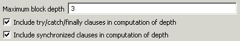
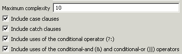
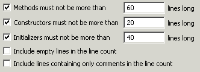

Audit - Rules - Program ComplexityDescriptionThis group contains audit rules that look for places where the code might be too complex. Complex code is harder to understand and maintain. It also tends to contain more errors. |
| Rules: |
Summary
Methods should be kept fairly flat.
Description
This audit rule finds methods and constructors that have too many levels of nested blocks. A method with too many levels of nested blocks can be difficult to understand. The definition of "too many" can be set.
Example
If the limit is set to two, then the inner if statement in the following would be flagged as a violation:
if (firstChoice == null) {
if (secondChoice == null) {
if (thirdChoice == null) {
return null;
}
}
}

Summary
Methods should be kept fairly simple.
Description
This audit rule finds methods, constructors and initializers that are too complex. The complexity is measured by the number of "if", "while", "do", "for", "?:", "catch" and "switch" statements (plus one) in the body of the member.
Example
If the maximum cyclomatic complexity has been configured to be 3, then the following method would be flagged as a violation because it has a cyclomatic complexity of 4:
public int getHireYear()
{
EmploymentRecord employmentRecord = getEmploymentRecord();
if (employmentRecord == null) return 0;
HiringRecord hiringRecord = employmentRecord.getHiringRecord();
if (hiringRecord == null) return 0;
Calendar hireDate = hiringRecord.getHireDate();
if (hireDate == null) return 0;
return hireDate.getYear();
}

Summary
Compilation units should not be too long.
Description
This audit rule finds compilation units that are longer than a specified number of lines.
Example
If the rule is configured to allow files of up to 40,000 lines, a file containing 100,000 lines of code would be flagged as a violation.
Summary
Types should not have too many constructors.
Description
This audit rule finds types that have more than the specified number of constructors. Types that exceed this number are likely to be too complex. Consider making some of the constructors more general.
Example
If the rule is configured to allow 3 constructors and a class with 6 constructors is found, that class will be flagged as a violation.
Summary
Types should not have too many fields.
Description
This audit rule finds types that have more than the specified number of fields. Types that exceed this number are likely to be too complex. Consider splitting the class into multiple smaller classes.
Example
If the rule is configured to allow 6 fields and a class with 15 fields is found, that class will be flagged as a violation.
Summary
Types should not have too many methods.
Description
This audit rule finds types that have more than the specified number of methods. Types that exceed this number are likely to be too complex. Consider splitting the class into multiple smaller classes.
Example
If the rule is configured to allow 20 methods and a class with 114 methods is found, that class will be flagged as a violation.
Summary
Methods should not have too many parameters.
Description
This audit rule finds methods that have more than the specified number of parameters. Methods that exceed this number are likely to be too complex. Consider moving some of the values and behavior associated with them into a separate class.
Example
If the rule is configured to allow 4 parameters and a method with 12 parameters is found, that method will be flagged as a violation.
Summary
Method invocations should not be chained into a long line.
Description
This audit rule looks for places where multiple method invocations are chained together into an overly long chain. There are two problems with long chains of method invocations. The most obvious is that they can make the code difficult to follow. An even more serious problem is that they often point out places where information has not been well encapsulated.
Example Color roofColor = party.getWorkAddress().getStructure().getRoof().getColor();
Summary
Methods, constructors and initializers should be limited in length.
Description
This audit rule checks for methods, constructors and initializers that are more that the specified number of lines in length.

Summary
Types should not be deeply nested.
Description
This audit rule finds source in which type declarations are deeply nested. The maximum depth can be configured. Top level types have a depth of zero (0), so a maximum depth of 2 would mean, for example, that an inner class of a top-level class could have an anonymous inner class without being flagged, but a third level of nesting would be flagged.